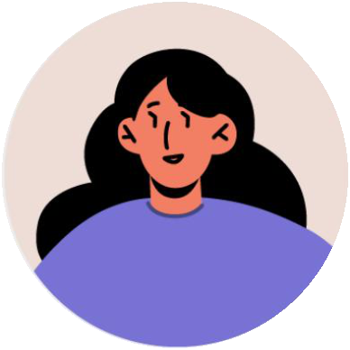

Tanya
- Age
- 30
- Education
- Engineering degree
- Hometown
- Bhopal, India
- Family
- Engaged
- Occupation
- Software engineer
“I am a detail-oriented person; organising the wedding remotely has been a challenge.”
Problem statement: Tanya is a busy software engineer who needs a way to book a wedding venue remotely, because she lives in a different country and can't visit the venues in person.
Goals
- Find the dream venue remotely.
- Find venues that can be customised to her needs.
Frustrations
- She can't visit the venues, so she has to make every decision remotely.
- It's hard to communicate her needs, and venues oversell and underdeliver.
Tanya is a 30-year-old software engineer with a slight visual impairment. She lives in Germany with her partner. They recently got engaged and plan to marry in India, where Tanya's family lives. They have set the dates and are looking for a venue that meets all their needs. Tanya would love a portal where she could compare every venue clearly by date and price, and customise the venue.